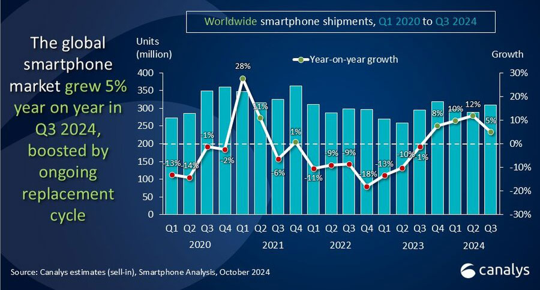
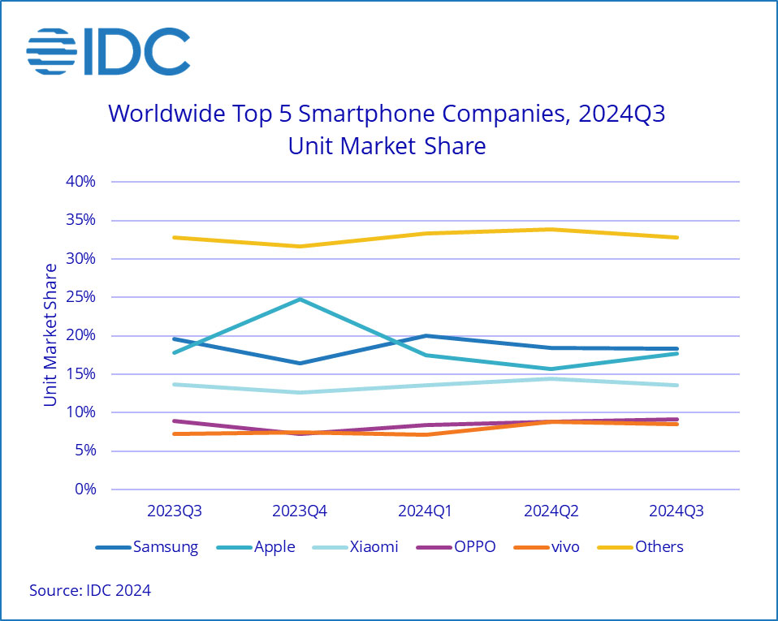

.png)

Global Smartphone Shipments Rise in Q3 as Growth Streak Continues
Market watchers may not agree on how much smartphone shipments grew in this year’s third calendar quarter, but they do agree on one thing: the market is emerging from its post-pandemic doldrums.
Global market research company Canalys reported Monday that worldwide smartphone shipments grew 5% in Q3 compared to the same period in 2023. The increase marks the fourth consecutive quarter of growth, it noted.

Meanwhile, according to its calculations, IDC pegs the increase for the same period at 4%, marking the fifth straight quarter of growth.
Canalys attributed the growth to demand in emerging economies, alongside the early stages of a replacement cycle in North America, China, and Europe.
IDC noted that the surge in Q3 shipments was led by strong growth from Chinese vendors like Vivo, Oppo, Xiaomi, Lenovo, and Huawei.
Sterling Quarter for Apple
IDC Research Director for Worldwide Client Devices Nabila Popal pointed out that the Chinese phone makers weren’t alone in racking up good growth numbers during the period. “While the growth of the Chinese players in emerging markets has been an ongoing theme this year, Apple also enjoyed a 3.5% YoY growth in shipments this quarter fueled by strong demand from the previous models and the launch of the new iPhone 16 lineup,” she said in a statement.“In Q3 2024, older iPhone models, specifically the iPhone 15, performed exceptionally well due to the heavy promotions and increased marketing activities around Apple Intelligence,” she noted.
“Despite the staggered rollout of Apple Intelligence in markets outside the U.S., Apple will continue to grow in the upcoming holiday season as it expects many customers to upgrade from the iPhone 13, iPhone 12, and prior models to a new AI-enabled smartphone, future-proofing their purchases for the long term,” Popal predicted.
According to Canalys, Apple’s Q3 growth enabled it to nearly topple Samsung from its leading position in the market.
“Apple achieved its highest third-quarter volume to date and has never been closer to leading the global smartphone market in a Q3 than now,” Canalys Analyst Runar Bjørhovde said in a statement.
“The market’s shift towards premium devices, intersected by an ongoing refresh cycle of devices bought during the pandemic, is benefiting Apple, particularly in its strong-hold regions such as North America and Europe,” he noted.
“Despite a modest initial reception,” he added, “the iPhone 16 is expected to help Apple maintain a strong finish to 2024 and help momentum in H1 2025, particularly as Apple Intelligence expands into new markets and supports additional languages.”
Samsung Retains Catbird Seat
According to IDC, Samsung shipped 57.8 million phones in Q3, giving it an 18.3% market share, compared to 59.5 million units and a 19.6% market share in Q3 2023. Apple, by contrast, shipped 56.0 million units during the period, for a 17.7% share, compared to 54.1 million units and a 17.8% share in Q3 2023.
“Samsung retained its market leadership despite a drop in the total number of units shipped,” IDC Vice President for EMEA Client Devices Francisco Jeronimo said in a statement.
“However,” he continued, “the company continues to grow its share in the premium segment as the average prices increased in the quarter driven by a stronger mix of Galaxy AI-enabled models.”
“The company started rolling out Galaxy AI features to other Samsung models and launched the new Galaxy Z Fold6 and Galaxy Z Flip6 foldables with Galaxy AI, which contributed to a better performance in the premium segment,” he explained.
“I think the improvement in AI capabilities is helping more mainstream smartphones look more attractive, and there’s an appetite for AI everywhere,” Anshel Sag, a senior analyst with Moor Insights & Strategy, a technology analyst and advisory firm based in Austin, Texas, told TechNewsWorld.